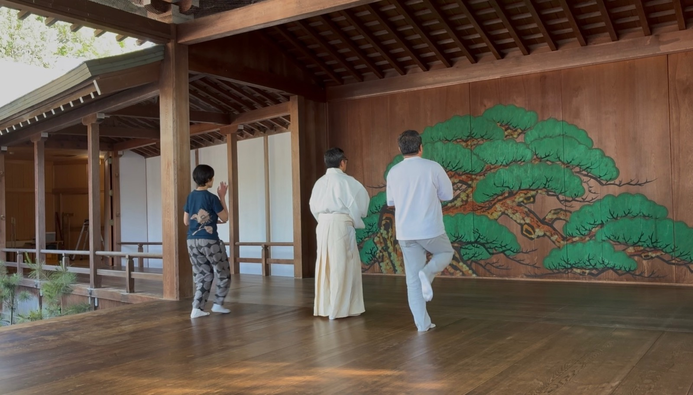
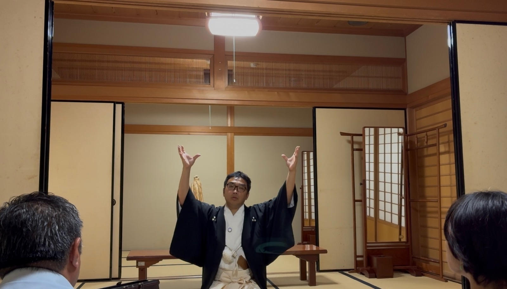

岡崎城 二の丸能楽堂にて 和儀お稽古の一場面

鏡板の松の前 少人数での和儀稽古

度會神道 講義の一場面
岡崎城 二の丸能楽堂。鏡板の松が見守るその舞台は、 音の反射から動線の設えまで、すべてが「身体が整う」方向に組まれています。 普段の部屋では起きない変化が、ここでは起きます。 橋掛りを渡り、本舞台に立つその瞬間から、身体は変わり始めます。
伊勢外宮の神主・出口延佳が体系化した度會神道の学び。 神代は遠い過去の神話ではなく、今この瞬間に現前している── そのことを、典籍の言葉と塾主の物語を通じて、 今日の自分のこととして受け取っていただきます。
能楽・狂言の身体技法から抽出した「肚の稽古」＝和儀。 670年磨かれた技芸の核を、今日からの稽古としてお手渡しします。 頭で分かったことを、身体で知る。 すり足ひとつで、日本人の記憶が甦ります。
和儀（わぎ）は、能楽・狂言の身体技法をもとに、 日本人の肚（はら）を再発見するための稽古として体系化された稽古です。 塾主は京都にて茂山千三郎先生より「和儀」を学び、習得。師範の資格を得ました。中常塾の核プログラムとして位置づけています。
「理屈を学ぶ前に、まず動く」── これが和儀の本質です。 身体が知ったとき、肚が落ちます。


度會神道講義で「肚の道」を胸に受け止め、和儀稽古で身体に降ろします。 講義と稽古をセットで行うことで、初めて「肚に落ちる」体験が生まれます。
※ 時間配分は開催日により異なります。詳細は申込ページにてご確認ください。
和儀に少し触れただけでも心身が整ったような気がします。 すり足の効果が早速出て、「そそそそっと歩いてきた」と言われました。 少しおしとやかに見えたようで、嬉しかったです。
習った摺り足の姿勢をとって歩くと身体の深部が筋肉痛。 普段どれだけ中心の筋肉を使っていないか実感しました。
新緑の季節の中、能楽堂でのお稽古。 場の空気に触れるだけでも、貴重なひとときでした。 美しい所作、美しい佇まい、身につけたいなとしみじみ感じました。
日本文化に触れ、和儀、口伝。 伝える事の大切さ、伝える事の本質、日本人のしん、人としてのしん。 大変貴重な体験、また勉強になりました。有難うございます。
私自身が永らく「誰とも共有できなかった大切な価値観」として心に秘めていた内容と同じことが書かれており、感動いたしました。 神道、自分自身を信じてまっすぐ生きればよいのだ、と肚落ちいたしました。
永年心に引っかかっていた違和感がすっと溶けて、目から鱗でした。 300年以上前に説いて下さっていたとは！ 開塾日に伺えて、光栄です。
度會神道は、伊勢外宮の度会氏が体系化した神道の流れです。 外宮の神主・出口延佳（1615-1690）はその集大成を成した人物で、 「中常ノ道ヲ神道トセルノ深意」と述べています。
中常とは、天御中主神（あまのみなかぬしのかみ）＝國常立尊の同躰異名です。 天の中心にある北極星のように、中心にして永遠、動かざる軸。 その道を「神道」と呼んだ延佳の言葉が、中常塾の名の根拠です。
中常塾の講義は、この古典の言葉を「今日の自分の肚の問題」として受け取ることを目指します。 神代は懐かしむものではなく、今この瞬間に現前している── その立場から、一緒に問い続けてまいります。

松浦茂樹（まつうら・しげき）
中常塾 塾主。2008年に度會神道と出逢い、以来探究を続けてまいりました。
京都にて茂山千三郎先生より狂言の身体技法、日本人の肚を再発見するための稽古として体系化された「和儀」を学び、習得。師範の資格を得ました。
父方は出雲族・登美氏の系譜に遡ります。伊雜宮を造営した伊佐波登美神と同族の血を引く者が、 神宮を丑寅で守る令和の岡崎で、度會神道と和儀を現代に継ぎます。
令和八（2026）年五月二十五日、中常塾を正式に開塾。 岡崎城 二の丸能楽堂にて定期的に講義・稽古を開催中です。
| 場所 | 岡崎城 二の丸能楽堂 愛知県岡崎市康生町561（岡崎公園内） |
|---|---|
| 内容 | 度會神道 講義 ＋ 和儀 お稽古 各講義、稽古の単独受講も可。塾主おすすめは、相乗効果が最も高まる全受講。詳細は申し込みページにて |
| 定員 | 稽古：7名まで ／ 講義：14名まで定員に達し次第、受付終了 |
| 参加費 | 申込ページにてご確認ください |
| 持ち物 | 白足袋（必携） 能舞台には白足袋でしか立つことを許されていません。必ずご持参ください。動きやすい服装でお越しください |
| 次回開催 | 申込ページ・SNSにてご案内 不定期開催。お早めにご確認ください |
中常塾 能舞台 講義・お稽古
頭で分かることと、身体で知ることは、別のことです。
能舞台という「場の力」の中で、一日かけて学びます。
その体験が、言葉では運べないものを運んできます。
少人数制のため、定員に達し次第締め切ります